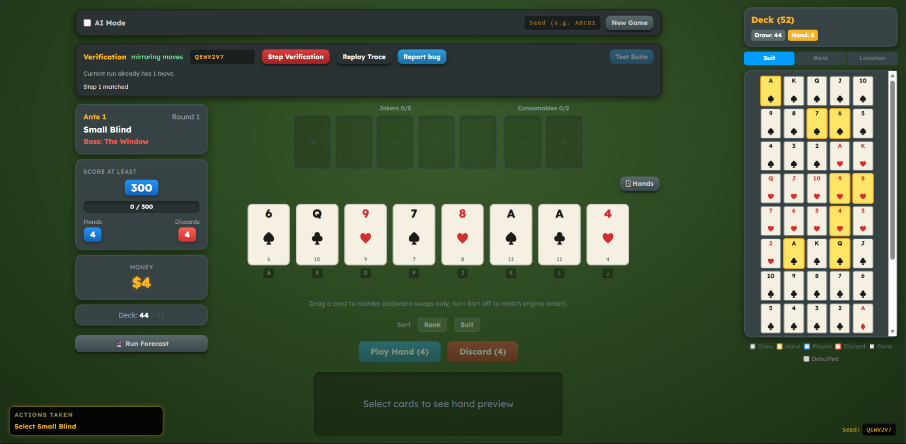
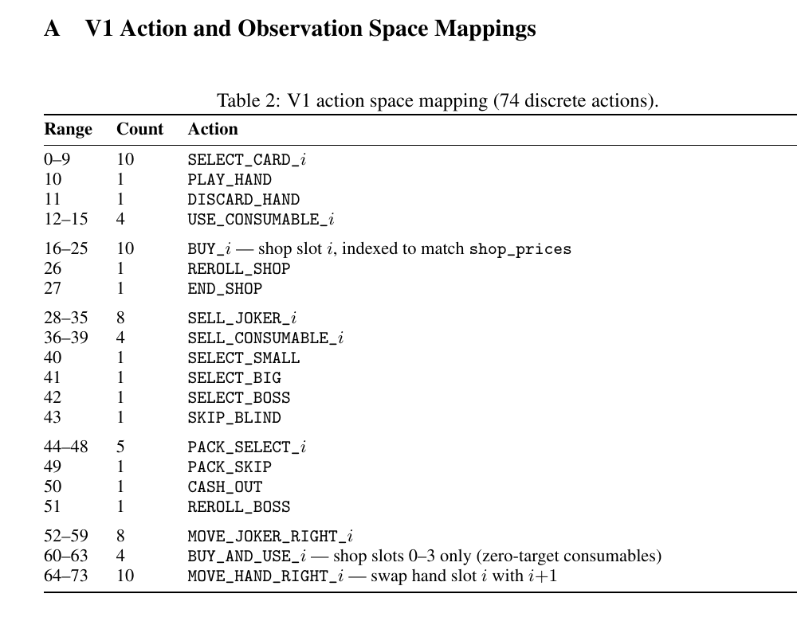
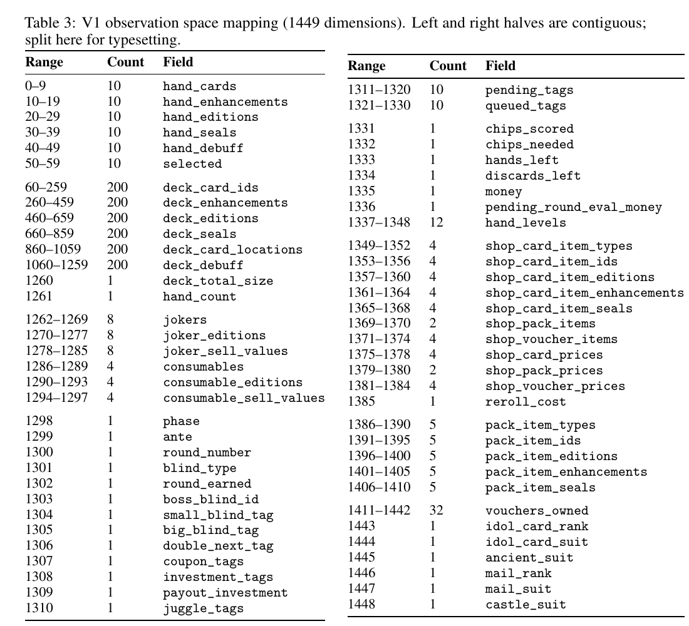
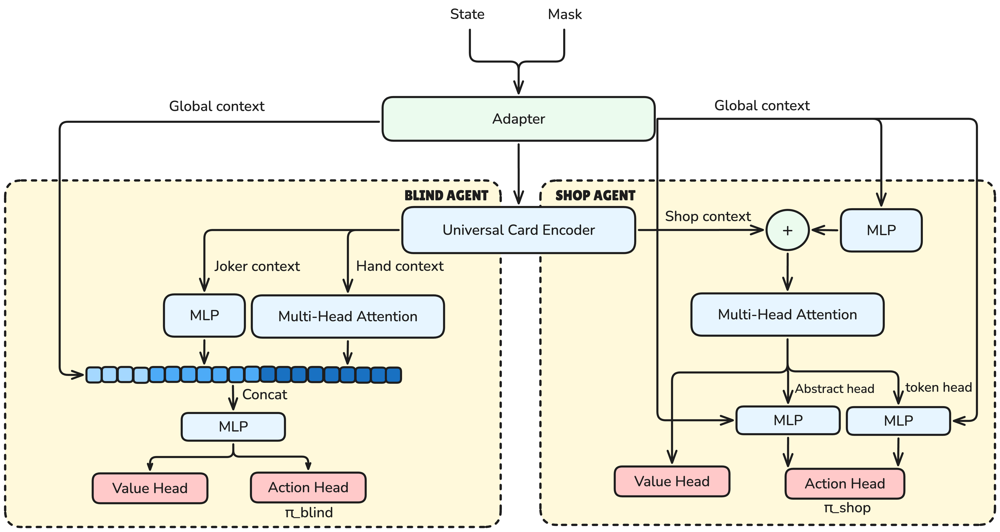
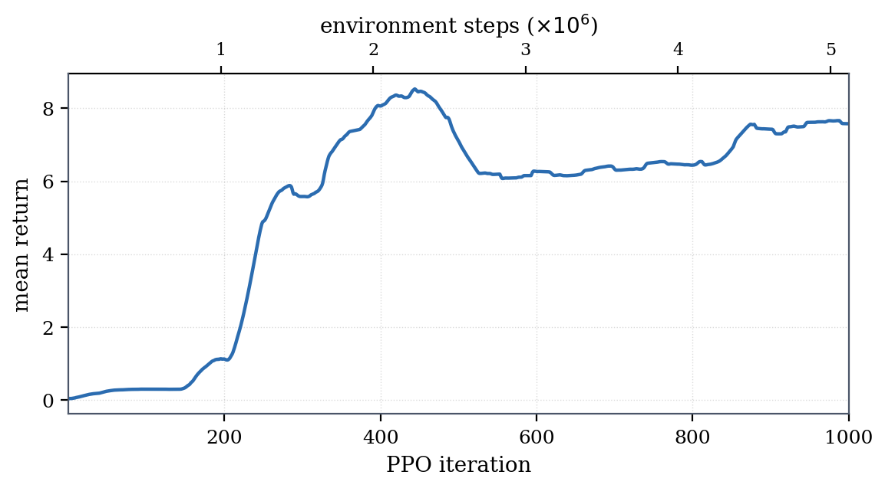
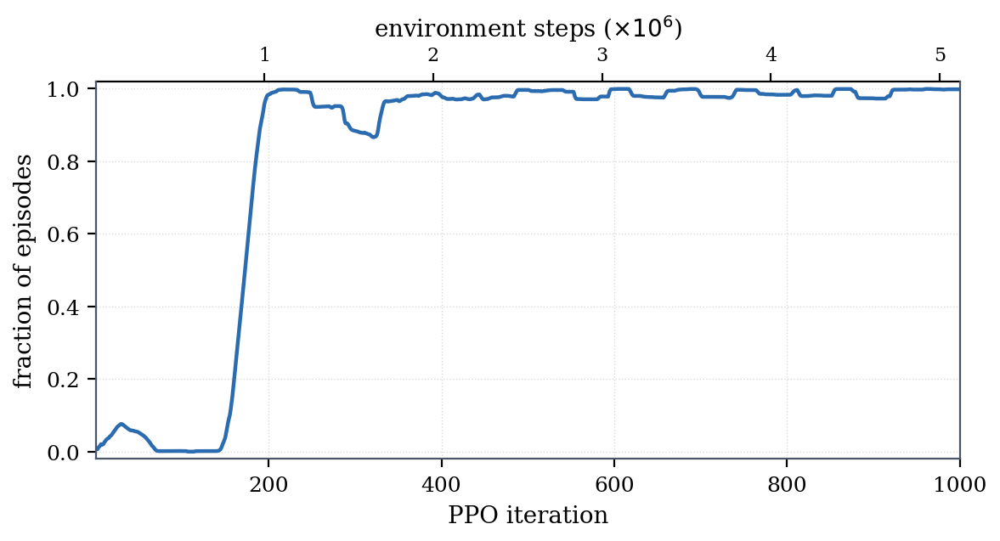
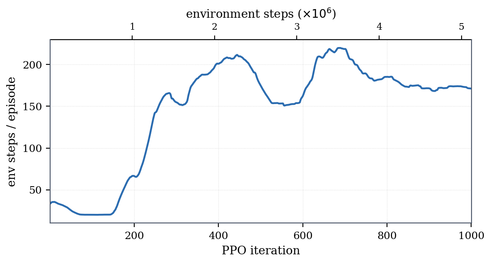
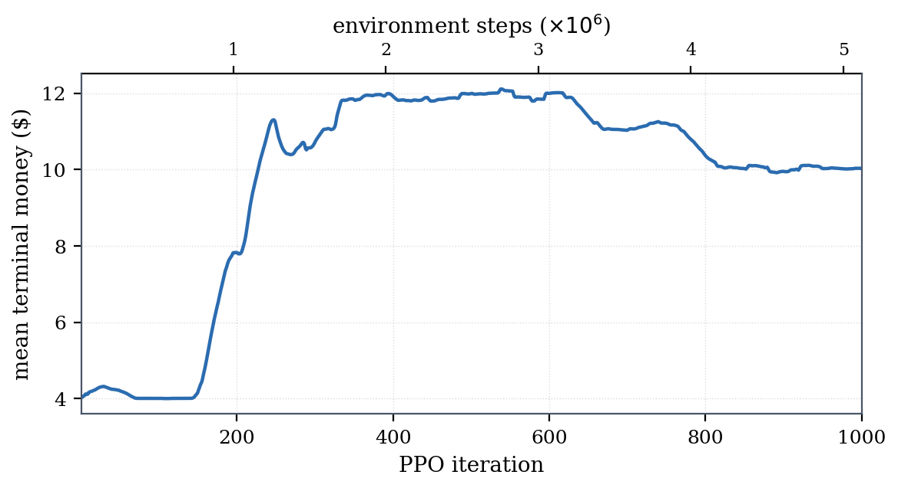
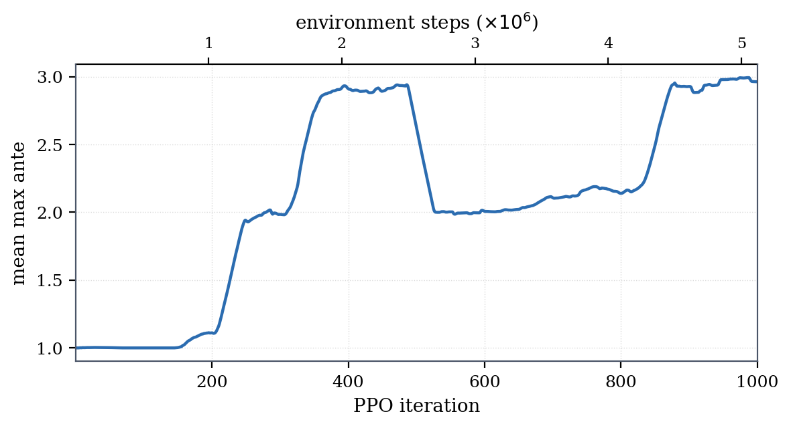

Balatro [1] combines tactical poker-hand selection with long-horizon deckbuilding and economy management. We studied whether reinforcement learning could jointly learn these two timescales using a high-throughput Rust environment, a compact observation-action interface, and two PPO policies specialized for different phases of the game. The blind policy handles card play and discards; the shop policy handles purchases, packs, and blind selection. Both observe the full game state, but each receives rewards routed toward the decisions it controls. For more details, read the full report.
Training directly through the graphical game client was too slow for the millions of transitions required by PPO and did not support efficient parallel rollouts. We therefore built a headless simulator that could execute complete runs quickly while retaining the mechanics needed by the agents.
The game engine is written in Rust and models hand detection, scoring, joker effects, shops, packs, economy, boss blinds, and seeded randomness. Python bindings expose it as a Gymnasium environment for RLlib training, while a WebAssembly build runs the same engine in the browser for direct inspection.

The complete environment can expose roughly 3,000 discrete actions and a 20,000-dimensional observation. For these experiments, we condensed it to a fixed 74-action interface and a 1,449-dimensional observation while retaining the state needed for blind, shop, pack, and progression decisions.
The 74 actions cover selecting and playing cards, discarding, using consumables, buying and selling items, rerolling or leaving shops, choosing or skipping blinds, opening packs, and reordering cards or jokers. A dynamic mask removes actions that are illegal, unaffordable, or unavailable in the current phase [3].

The observation encodes the hand and full deck with card attributes, owned jokers and consumables, the current phase and blind, chips, hands, discards, money, hand levels, shop and pack contents, vouchers, tags, and boss-specific state. Both policies receive this shared global state.

Early single-policy experiments alternated between two failure modes: aggressive blind play that ignored the economy and shop behavior that hoarded money without building useful synergies. We separated these responsibilities while preserving a shared view of the game state.
A shared card encoder combines card identity, suit, rank, enhancement, edition, seal, and relational hand features. Self-attention summarizes the hand, while a separate joker summary and round context feed the actor and critic. An autoregressive action head first chooses play or discard, then selects cards one at a time before stopping and committing. This choose-or-stop design represents card subsets without requiring a flat output for every possible combination.
Shop, pack, and owned items use the same card encoder with action and slot tags. A context token and multi-head attention let the policy evaluate each item against the current money, deck, jokers, and blind. Item-specific logits are combined with a second head for abstract actions such as rerolling or leaving the shop. Keeping those abstract decisions separate from item actions was more stable than representing them as pseudo-items.

The common environment reward is deliberately simple: clearing a blind gives +1; a nonterminal hand receives its scored chips divided by the blind target, capped at 1; and running out of hands gives a terminal -1. Shop actions, discards, rerolls, cash-outs, and reordering have zero core reward. Invalid actions carry a -1 safeguard, although action masking prevents them during training.
We then route denser shaping signals [4] to the policy that can act on them:
The higher initial shop entropy encouraged exploration, while its decay prevented the policy from collapsing into repeatedly rerolling or immediately ending the shop.
The plots show on-policy training metrics over the first 1,000 PPO iterations, or about five million environment steps, smoothed with a 40-iteration trailing mean. The agents move through an initial failure regime, a sharp transition around iterations 150-400, and a later plateau.





The first-blind clear rate crossed 99% by iteration 173. In the plateau regime, mean return settled near 7.6, episodes lasted roughly 170-200 steps, and mean maximum ante reached stabilized around 2.6-3.0 out of 8.
This establishes that the two-policy decomposition learns reliable tactical blind play and makes the full multi-phase loop trainable. It does not establish run-level mastery: the policies did not complete all eight antes, and the remaining bottleneck is long-horizon shop and deck-building strategy.
Trajectory inspection suggested that the blind policy converged on a narrow preference for easy hands such as pairs and two pairs, while using discards myopically rather than preserving them for later decisions. That behavior was sufficient for early blinds, especially when paired with favorable joker paths, but it did not create the hand diversity or resource conservation needed for later antes.
The V1 interface omits part of the full joker and voucher pool, caps dynamic slots, and was not evaluated on held-out seed distributions or through live-game deployment. The main result also comes from one full-length training run, and both policies act reactively without search.
The next research step is stronger evaluation across held-out seeds, followed by better long-horizon shop and deck-building objectives. Search or planning is also a natural direction for purchases whose value may only become visible several blinds later.